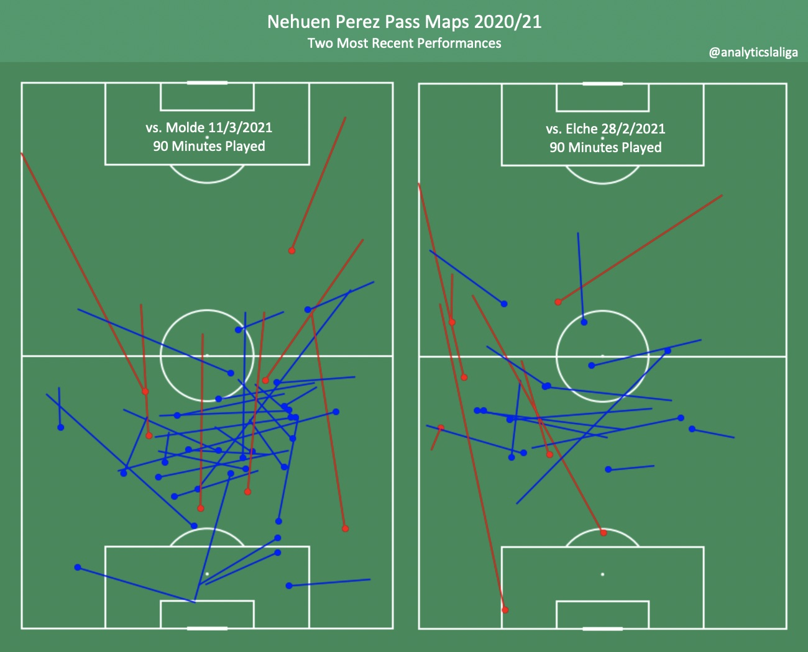

Nehuen Perez Scouting Report by Charlie Tuley - March 19, 2021
|
ctuley@umich.edu
Nehuen Perez
Club: Granada CF (Parent Club: Atletico Madrid)
Nationality: Argentina
Position: Centre Back
Squad Number: 3
Date of Birth (Age): June 24, 2000 (20)
Dominant Foot: Right
Height: 186cm, 6’1’’
Market Value (via Transfermarkt): €4.16M
Contract Expires: Atletico Madrid contract ends June 30, 2024 (Granada Loan ends June 30, 2021)
All video clips come from Wyscout.com
Background
Hailing from Hurlingham, Argentina, Nehuen Perez joined Argentinos Juniors academy at the age of seven. He would go on to spend 10 years in the club’s youth system and made his first-team debut in the 2017/18 season. After the 17/18 campaign, he would be signed by La Liga giants Atletico Madrid for €1.8 million, who would immediately loan him back to his boyhood club for the 2018/19 season (he would go on to play a very limited role in this team during the loan spell, only making three appearances). For the 2019/20 season, Perez was loaned to newly-promoted Liga Nos side Famalicao, where he would become a key player in leading the club to a sixth-place finish in their first season in the top flight. For the 2020/21 season, Perez would once again be sent on loan, this time to La Liga side Granada CF, who were coming off of a great post-promotion season in La Liga, finishing seventh and grabbing a Europa League spot.
This season Perez has made 17 appearances for Granada, playing 1,178 minutes across all competitions. He’s been the club’s fourth choice centre back (behind Domingos Duarte, German Sanchez, and Jesus Vallejo), and has gotten the majority of his minutes in the Copa del Rey and against weaker competition in La Liga, completing 90 minutes against teams like Elche (in both the home and away clashes), and Huesca.
Perez typically plays on the right side of a two-man centre back partnership (as he is right-footed), but he also has experience playing on the left. He usually acts as the more aggressive of the two centre backs, stepping out from the backline to make challenges and interceptions.
Possession
Perez is by no means a modern ball-playing centre back. His passing isn’t poor, but compared to other centre backs at the professional level, he falls well short. He has an 84.2% pass completion rate this season (Wyscout.com), but this doesn’t say much, as only 39.6% of his passes move the ball upfield (and he only completes 71.2% of his forward passes).
He is comfortable in possession when moving the ball about the backline and into the midfield, but as the passes grow more difficult, his performance drops considerably. He attempts 6.71 long passes each match (usually from free kicks in the defensive half), and he completes these with 55.9% accuracy. Furthermore, he rarely attempts to play line-breaking passes when in possession. He attempts 0.36 through balls per match and hasn’t completed one yet this season.

One surprising strength that Perez possesses is his ability to pass the ball to his teammates via heading it. He is very good at directing his headed passes, and this comes in handy as Perez partakes in aerial duels quite often.
He heavily favors his right foot when passing, which can occasionally cost him when he’s forced to make passes under pressure. His first touch also can cost him, especially when it's with his left foot. For this reason, his first touch clearances tend to be played out of bounds as opposed to aiming for a teammate upfield (which actually is a sign of proper decision making and maturity).
The clip below is an example of a poor first touch clearance from Perez, as he should have sent the ball upfield or out of bounds as opposed to trying to find a teammate who was under pressure (and in a poor position, turned away from any possible passing options).
He also doesn’t have the modern centre back trait of progressing the ball by carrying it into space. He averages 0.74 progressive dribbles per 90 minutes played, ranking very low among other centre backs at the top level.
To be fair, the lack of ball progression and risk-taking from Perez isn’t his fault. He plays in a Granada side that relies on their double pivot of midfielders to handle the lion’s share of moving the ball upfield, the centre backs aren’t asked to shoulder this responsibility. When he played with the Argentina Under-20’s in the Sudamericano U20 back in 2019, he averaged 19.82 forward passes/90 (with a 68% completion rate) and 8.87 passes into the final third/90 (57.1% completion), proving that he can provide more of a threat in possession when put in a system that favors its centre backs to do so.
Finishing
As Perez is a centre back, this section is for the most part unimportant. However, as the game of football is moving in a trend towards having all players in the squad contributing to the goal tally, I thought it would be worth putting in a short section regarding Perez’ finishing ability. So far this season, Perez has had six shots (0.79 xG) in his 17 appearances, most of which came from attacking free kicks and corners. He’s only put one of the six chances on target, and he’s yet to score this season. Perez is very aggressive when attacking crosses and loose balls, and asset on both ends of the pitch.
Defense
The most important aspect of Perez’s game is his aggression. In Granada’s high defensive line system, Perez isn’t afraid to step even farther up to make a challenge or gather a loose ball. His in-your-face, physical, defensive style is excellent at throwing opponents off their game and has brought him quite a bit of success this season.
In the clip above, Perez makes the (correct) decision to step to the player dribbling at him, and show him across the field, away from goal. His man does have him for pace and is able to get a pass off before Perez can make the challenge, which allows Molde to create a chance. Also, this is a great example of Perez making a clearance out of play as I spoke about earlier.
Though his aggression is usually an asset when defending, Perez also is able to tone it down in key, high-pressure situations. In the video below, Perez shows great defensive positioning when defending a player who is stationary at the top of the penalty area. The player has very few options, so there’s no reason for Perez to make a reckless challenge, and he keeps his position well, moving his feet in small quick movements so that he can block any pass or shot that is put near him. He also keeps his body and center of gravity low, allowing him to remain mobile and stay between the attacker and the goal.
Unfortunately, the attacker is able to play a pass wide, and the receiver is able to put in a cross, creating a shot for Molde. Perez isn’t at fault for the pass being played, it was good on him to force the ball wider in his defensive third. Instead, Kenedy’s (24) position should have been just a bit wider when the pass was played, allowing him to be closer to the crosser (and he may have been able to block the cross).
His positional awareness is also very high, and he’s adept at tracking runners. His head is always on a swivel when he’s defending deep in his own territory, and he’s always monitoring his position compared to those he’s meant to be tracking.
When it comes to aerial duels, Perez is average for a centre back of his size. His 6’1’’ frame makes it relatively easy for him to win balls out of the air, and he does so with 54.7% consistency.
His positioning is by far his biggest asset when it comes to finishing. As can be seen in the clips below, both of the goals that Baena has scored this season came from him making well-timed runs into the penalty area, allowing him relatively easy finishes.
There are no flaws to Perez’ defensive game other than rawness and a lack of consistent playing experience at the top level. He is error-prone at times, can give away stupid fouls, and mistimes challenges, all of which can be expected for a 20-year-old player playing his first season in an elite league. An example of one of these mistakes can be found in the clip below, as Perez misses a (completely uncontested) aerial duel, then is out-bodied by Lucas Boye, who he allows to get goal-side of him. That is more than enough for a striker of Boye’s quality to work with, and he slots the ball into the back of the net.
Verdict
Nehuen Perez has all of the defensive qualities needed to be a top centre back, and if given the right coaching and system to improve his abilities in possession, he could flourish into one of the best centre backs in La Liga. Atletico Madrid certainly knew what they were doing when they signed Perez back in 2018, he seems to be a perfect fit for Diego Simeone’s system (when they play a four-man backline, it might take some adjusting for him to get used to the three-man defense that Atletico Madrid have been favoring lately). He may have to go out on loan for another season or two before joining his parent club for good, as he probably wouldn’t bag a key role in Simeone’s backline with the current group of centre backs that Atletico Madrid have (this would change entirely if one of them was sold).
Perez undoubtedly has a very high ceiling, and Atletico Madrid need to be very careful with how they treat his development. If Perez continues on his upward track of improvement (which is contingent on him playing for a team next season that can offer him consistent minutes) he will develop into a very talented player and a centre back that very few forwards will want to go up against.